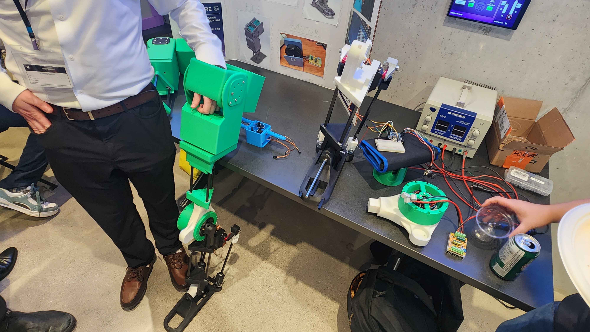
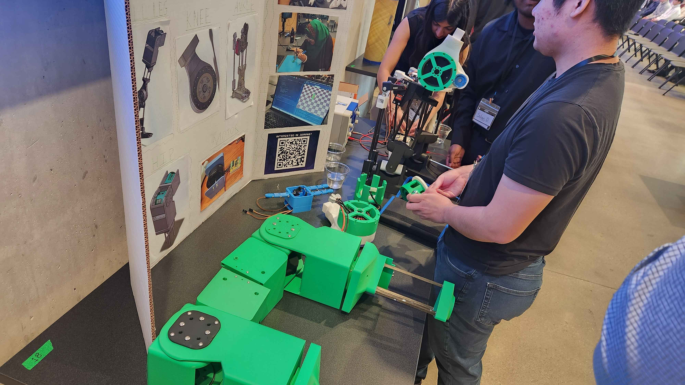
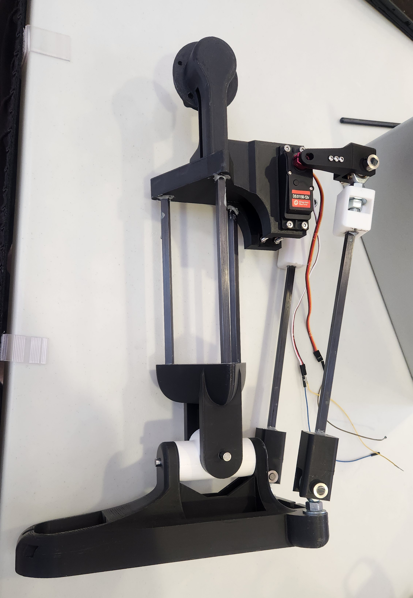
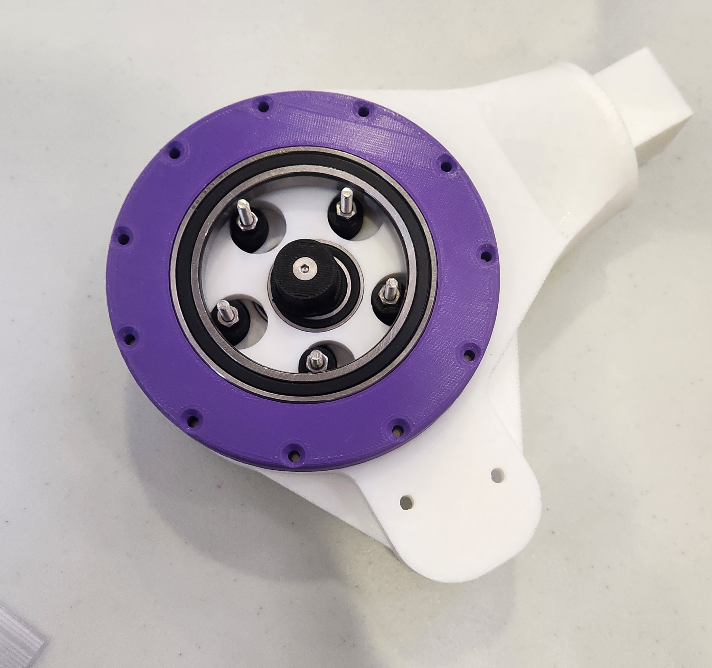
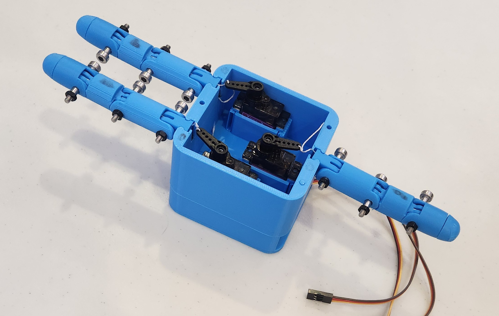

2019-2026
Project TITAN
TITAN was WE Bots' first humanoid robot design: an ambitious, six-foot-tall platform that challenged generations of members to work across mechanical design, electronics, controls, manufacturing, and full-system integration.
TITAN is the project that Project JOSH began as. After being showcased at the Alchemy showcase and the 2026 Canadian Tech Summit, TITAN was officially retired and relaunched/rebranded under a new name: Project JOSH.




